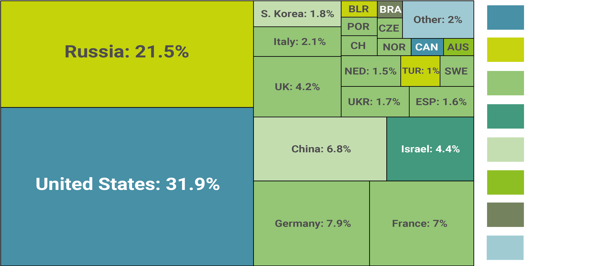
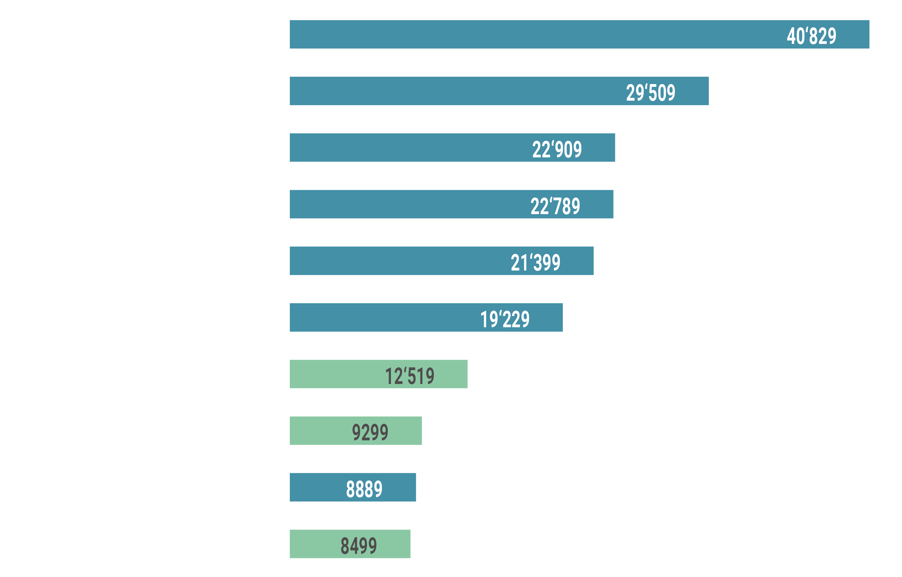
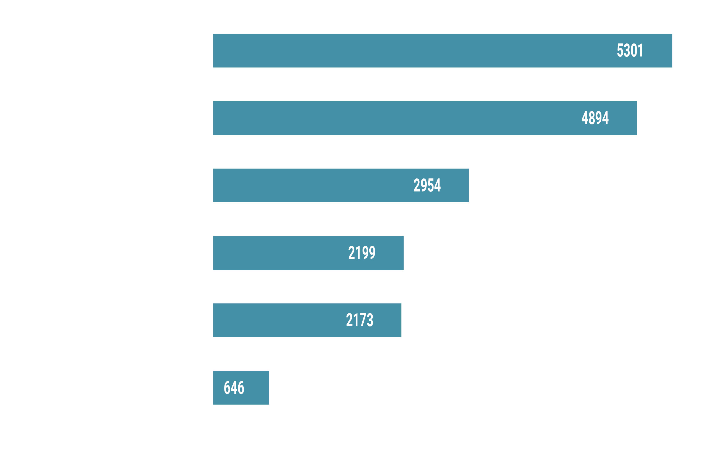
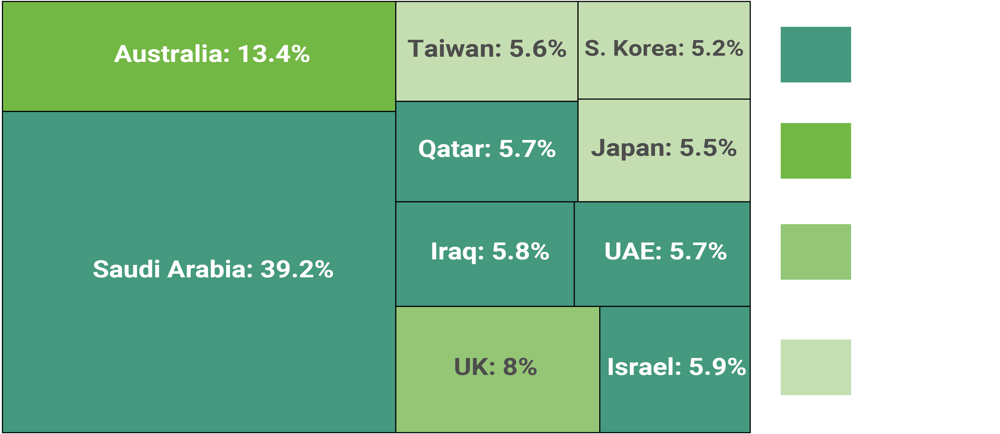

US weapon deals
Gods of War Part I
How the U.S Military-industrial Complex is ‘weaponizing’ Foreign Policy.
BY Benjamin Bitoun
Published August 24, 2018 for Lede

NOTE: The words in this wordcloud represent all the weapons systems sold by U.S companies in 2017.
SOURCE: SIPRI Arms Transfers Database
In his farewell address to the American people in January 1961 President Dwight D. Eisenhower showed concerns that a "military-industrial complex" could lead to a state of perpetual war as the big armament industry will continue to profit from warfare. Eisenhower feared that therefore the manufacturing industry and the U.S economy as a whole would become dependant of the production of weapons. Was he right? In order to find out let’s have a closer look at the major arms manufacturers, the countries that bought U.S weapons and at the armed conflicts and wars in which they are used. For that we'll use the data that the Stockholm International Peace Research Institute (SIPRI) has gathered on all the global weapon transfers since the 1950s.
Arms companies and contracters
SIPRIs data details all the weapons exporters and importers and all the transfers. The institute uses the unique trend-indicator value (TIV) to measure the volume of international transfers of major weapons. This takes into account any transfers of major arms, regardless of the price paid or agreed between the supplier and the recipient. These are the top 10 countries exporting arms around the world in 2017 and their share:
The USA and Russia exported over half of the world’s major weapons in 2017
Percentage share of all the arm exports (31.1 billion TIV in total).
SOURCE: SIPRI Arms Transfers Database
Almost a third of the weapons came from the U.S. Except for Russia, every other arms exporting country stayed in the single digit range with traditional European producers like Sweden or Switzerland even under 1 percent.
Now let's have a closer look at the companies that produced these weapons:
U.S companies dominate Global Arms Sales
Volume of arms sales in millions of trend-indicator values (TIV)
NOTE: The trend-indicator value (TIV) measures the volume of international transfers of major weapons. He takes any transfers of major arms into account, regardless of the price paid or agreed between the supplier and the recipient.
SOURCE: SIPRI Arms Transfers Database
By looking at the top ten weapon manufacturers it becomes even more obvious to what degree the U.S is dominating the international arms business. Only three European companies even made it into the top ten - with the british manufacturer BAE producing and selling a good share of its weapon via a U.S subsidiary.
Let's focus on the U.S companies and on their sales numbers:
NOTE: The trend-indicator value (TIV) is based on the production costs of weapons and is intended to represent the transfer of military resources rather than the financial value.
SOURCE: SIPRI Arms Transfers Database
The first thing that should catch your eye is these companies performance depends on arms sales. With the exception of Boeing there is no diversification.
This wasn't always the case. In 1945, after years of wartime rationing, what the people of the United States wanted was new cars and consumer goods. Therfore, converting factories to civilian production was a no-brainer and sufficiently profitable to match wartime earnings.
After the Korean War in the early 1950s, however, a similar conversion back to civilian production wasn’t profitable. And companies that considered it in the early 1990s, like General Dynamics in Groton, Conn., decided to stick with making weapons. These companies concluded that military work was more profitable and generated more jobs. It's safe to say that they were right. Let's look at the profits they made last year:
Lockheed and Boeing far ahead of the rest when it comes to profits
Profits in mio. $.
SOURCE: SIPRI Arms Transfers Database
As the weapon production increased over the years, the manufacture of autos and electronics shifted partly or wholly overseas. So did the production of other civilian products — what made the share of the nation’s factory output even bigger.
It now seems safe to say that President Eisenhowers fear has become reality: U.S manufacturing relies on weapons production. Today roughly 10 percent of the $2.2 trillion in factory output in the United States goes into the production of weapons. And with these seven companies employing almost a million people and being one, if not the most important employer in their districts it is safe to say that lobbists and politicians representing these districts will make sure that the companies' interests will be embedded in the country's annual budget.
In the 1940ies the U.S didn’t need to produce weapons to keep manufacturing afloat. But, judging from the numbers, it does now. Let's shift the focus on the important markets.
The biggest markets for U.S weapons
Numbers are in mio. and represent the trend-indicator value (TIV)*.
NOTE: The trend-indicator value (TIV) is based on the production costs of weapons and is intended to represent the transfer of military resources rather than the financial value.
SOURCE: SIPRI Arms Transfers Database
The profits of the U.S weapon manufacturers depend to a large degree on the conflicts in the Middle East. In the Americas only the Mexican Government who is fighting a bloody "war on drugs" was a important client of the industry. Sure, traditional allies like the UK and Australia remain important buyers of U.S weapons. But it is the Middle Eastern countries that are the most important for the industries profits. Let's have a look at the top ten clients of the U.S weapon industry:
Nearly 40 percent of all the U.S weapon in 2017 were sold to Saudi Arabia
Percentage share of U.S arm exports (12.4 billion TIV in total).

The export numbers show a clear picture of which countries ally with the USA and which are considered dangerous. On one hand the U.S was the main supplier to the Arab States of the Gulf, supplying over 50 percent of imports by each of these states. The profits of the U.S arms manufacturers for 2017 depended to a large degree on deals with Saudi Arabia who, among other Arab States, is involved in the bloody Iran–Saudi Arabia proxy conflict fought in Yemen.
On the other hand Iran is currently under a partial UN embargo for arms imports. The imports by the Arab States of the Gulf and major arms imports to Iran are therefore highly unbalanced. Still, a perceived threat from Iran is a key justification for rising arms imports to States like Saudi Arabia by the USA.
But the export numbers show that U.S arms manufacturers may have found a new lucrative market for the years to come in Asia. The South China Sea has been the subject of increasingly bold talk from the Chinese and US Governments. As a result Taiwan was one of the three most important Asian buyers for U.S weapons, together with Japan and South Korea. There is a trend behind this: As a response to geopolitical pressures from China it has increased its arms imports by 647 percent between 2012–16 compared to 2007–11.